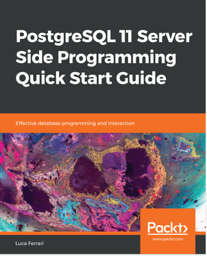
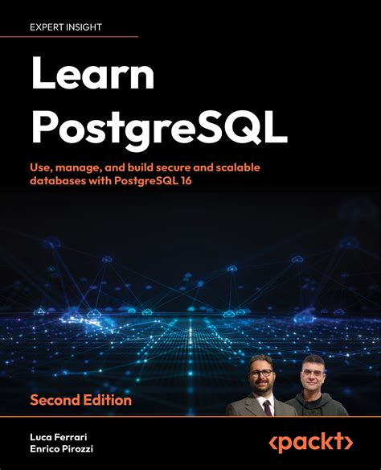
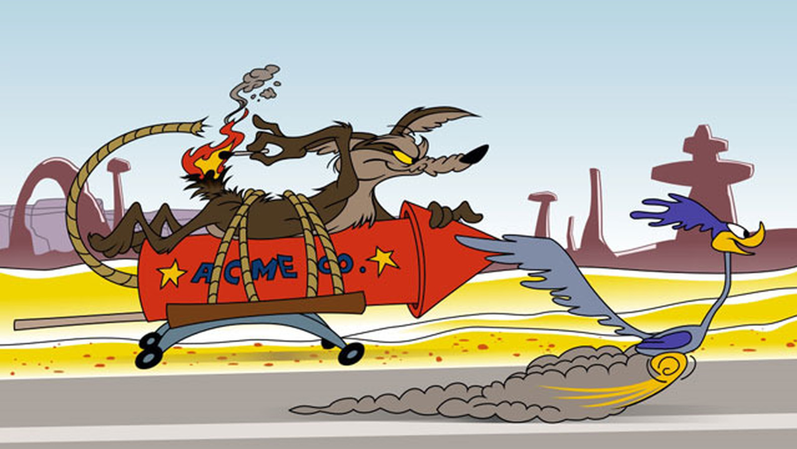
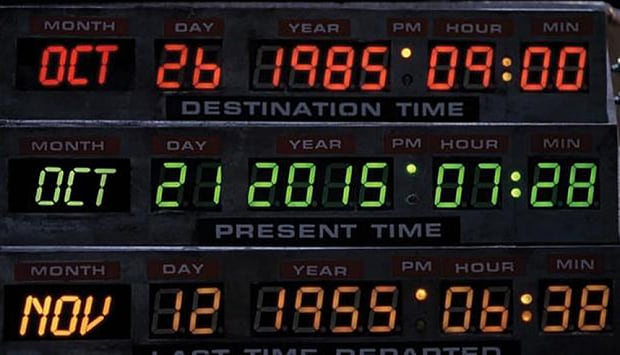
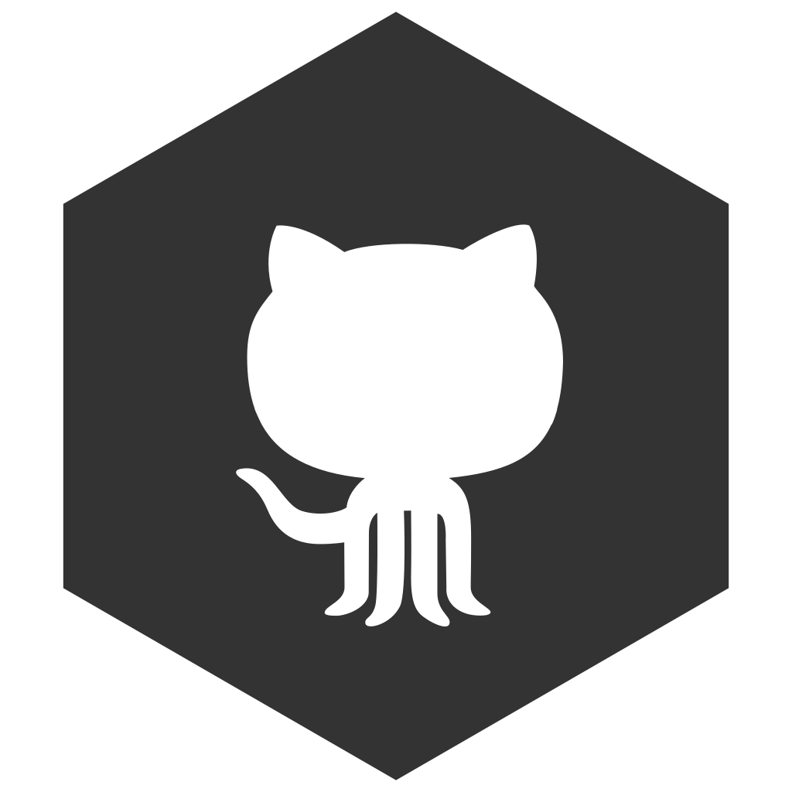
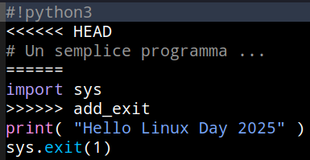
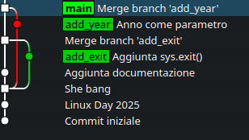

Git per non impazzire con 20 versioni di presentazione_finale.pdf
% tree Documents --sort=ctime
Documents/
+-- presentazione_git.pdf
+-- presentazione_git_v2.pdf
+-- presentazione_git_v2_con_immagini.pdf
+-- presentazione_git_v3.pdf
+-- presentazione_git_finale.pdf
+-- presentazione_git_finale_16Ottobre.pdf
Un VCS (Version Control System) è uno strumento per il controllo delle revisioni.
Un DVCS (Distributed Version Control System) è uno strumento per il controllo delle revisioni distribuito.
distribuito significa che non esiste una copia più importante di un'altra!
Git viene creato da Linus Torvalds per risolvere gli attriti fra gli sviluppatori kernel causati dalla perdita dell'uso di BitKeeper.
Inizialmente, e ancora oggi, Git è pensato per lavorare con le email.
Junio C. Hamano implementò i comandi user-friendly di git.
Git è stato pensato per un caso d'uso specifico: un progetto di grosse dimensioni con molti file e molti partecipanti!
Spesso è troppo potente per i nostri progetti!

Git tiene sotto controllo un intero albero (tree) di file e directory: non considera affatto le modifiche ai singoli file!
Git è fatto per dimenticare!
… kind of!
git è un DVCS molto famoso e ampiamente adottato, ma non è il solo:
bzr (GNU Bazar)https://en.wikipedia.org/wiki/Comparison_of_version-control_software
.git);
HEAD è lo stato attuale del repository;tag è una etichetta applicata ad un preciso punto della storia del progetto (commit);remote è un riferimento ad una copia differente del repository;In ogni momento, ci sono tre stati possibili:
HEAD ti dice dov'eri;
Ogni stato del repository viene identificato da un hash (SHA-1); l'hash identifica la revisione alla quale si sta facendo riferimento.
L'hash identifica in maniera univoca (senza collisioni) lo stato di un repository ovunque si trovi:
e14c994fb0d1bd650a5b960c27ecbf5aef1d4959
Gli hash possono essere "accorciati" al loro prefisso univoco:
e14c994fb0d1bd650a5b960c27ecbf5aef1d4959
e14c994
Un branch (ramo) è la linea temporale che identifica lo stato del repository.
I branch sono privati (eccetto quando diventano pubblici!).
I branch possono essere fatti confluire uno nell'altro (merging).
mainOggi il branch iniziale si chiama main (in passato master).
Un merge è un commit che ha uno o più parent, ossia che deriva da commit precedenti.
La capacità di creare un merge (un singolo commit) da più di due commit viene denominata octupus merge.

Un semplice esempio
% mkdir linux_day
% cd linux_day
% git init .
Initialized empty Git repository in /home/luca/tmp/linux_day/.git/
e opzionalmente
% git config --local user.name "Luca Ferrari"
% git config --local user.email "fluca1978@gmail.com"
Si aggiunge un file
% cat << EOF > main.py
print( "Hello world!" )
EOF
git status ci indica cosa sta succedendo:
% git status
On branch main
No commits yet
Untracked files:
(use "git add <file>..." to include in what will be committed)
main.py
nothing added to commit but untracked files present (use "git add" to track)
git add e git commit consolidano la situazione:
% git add main.py
% git commit -m "Commit iniziale"
[main (root-commit) dc14a5e] Commit iniziale
1 file changed, 1 insertion(+)
create mode 100644 main.py
git add e git commit per le varie modifiche:
% $EDITOR main.py
% git add main.py
% git commit -m "Linux Day 2026"
...
git log permette di percorrere la storia fino a qui:
% git log --oneline
cbe5b0e (HEAD -> main) She-bang
31a08fc Linux Day 2026
dc14a5e Commit iniziale
git diff consente di vedere le differenze fra diversi stati. In default controlla la differenza fra index e working tree, se si
specifica un commit si vede la differenza fra lo stato attuale e quello precedente:
% git diff dc14a5e
diff --git a/main.py b/main.py
index c61fd26..35d4899 100644
--- a/main.py
+++ b/main.py
@@ -1 +1,2 @@
-print( "Hello world!" )
+#!python3
+print( "Hello Linux Day 2026" )
Se non si vuole lavorare con gli hash, si può usare HEAD come punto di partenza e specificare di quante revisioni andare indietro nel tempo:
^, uno per ogni salto.% git diff HEAD~2
% git diff HEAD^^
Il comando git branch consente di gestire i rami.
Ogni branch vive di vita propria, i commit sono consolidati su quel ramo senza "sporcare" gli altri rami.
Ogni repository di fatto è almeno un ramo!
Lo sviluppo con più rami in parallelo genera conflitti.
% git branch add_exit
% git checkout add_exit
Switched to branch 'add_exit'
% $EDITOR main.py
% git add main.py
% git commit -m "Aggiunta sys.exit()"
[add_exit cc84ff2] Aggiunta sys.exit()
1 file changed, 2 insertions(+)
Il nuovo ramo parte da dove si è in quel momento, se si vuole specificare l'origine occorre fare prima un checkout o indicare al comando branch il parent.
% git branch add_year main
% git checkout add_year
Switched to branch 'add_year'
% $EDITOR main.py
% git add main.py
% git commit -m "Anno come parametro"
[add_year de42861] Anno come parametro
1 file changed, 2 insertions(+), 1 deletion(-)
main% git checkout main
% $EDITOR main.py
% git add main.py
% git commit -m "Aggiunta documentazione"
[main bb3f4b3] Aggiunta documentazione
1 file changed, 2 insertions(+)
Riunionamo tutto quanto sul ramo main:
% git checkout main
% git merge add_exit
Auto-merging main.py
CONFLICT (content): Merge conflict in main.py
Automatic merge failed; fix conflicts and then commit the result.
Occorre editare il file manualmente e capire cosa c'è che non va.

e una volta fatto
% git merge --continue
[main fb9006c] Merge branch 'add_exit'

git log / git diff - capire cosa è cambiatogit revert <hash> - annulla in sicurezza (ideale se già pubblicato)git bisect - per grandi storie, trova il commit colpevole (mostriamo concettualmente)Consiglio pratico: preferisci git revert rispetto a riscrivere la storia sui rami pubblici.
git revert% git revert HEAD
[main 5f5010d] Revert "print di debug all'avvio"
1 file changed, 1 deletion(-)
Viene creato un nuovo commit che annulla le modifiche.
Una volta integrati i branch possono essere eliminati e l'informazione sui relativi commit non andrà persa (o quasi?).
% git branch -D add_year
Deleted branch add_year (was 187cceb).
% git branch -D add_exit
Deleted branch add_exit (was 822dce1).
% git log --oneline
99e28a1 (HEAD -> main) Risolve problema exit, fix 822dce1d
8ab3b4b Merge branch 'add_year'
fb9006c Merge branch 'add_exit'
6514042 Aggiunta documentazione
187cceb Anno come parametro
822dce1 Aggiunta sys.exit()
b64797b She bang
9f26b25 Linux Day 2026
345e5ab Commit iniziale
Si perde l'informazione circa il nome dei branch nei commit!
git rebase riscrive la storia (sposta commit)git remote
Occorre creare un repository (vuoto) su un qualche fornitore.
Dopodiché si configura git per interagire con quel sistema remoto.
% git remote add gitlab git@gitlab.com:fluca1978/ld2026.git
% git remote -v show
gitlab git@gitlab.com:fluca1978/ld2026.git (fetch)
gitlab git@gitlab.com:fluca1978/ld2026.git (push)
# opzionale
% git config --local push.autoSetupRemote true
git pushDa qui in avanti, si è espsoti al pubblico imbarazzo!
% git push gitlab
Enumerating objects: 19, done.
Counting objects: 100% (19/19), done.
Delta compression using up to 8 threads
Compressing objects: 100% (12/12), done.
Writing objects: 100% (19/19), 1.73 KiB | 1.73 MiB/s, done.
Total 19 (delta 3), reused 0 (delta 0), pack-reused 0
To gitlab.com:fluca1978/ld2026.git
* [new branch] main -> main
branch 'main' set up to track 'gitlab/main'.
git clone% git clone git@gitlab.com:fluca1978/ld2026.git
Cloning into 'ld2026'...
remote: Enumerating objects: 19, done.
remote: Counting objects: 100% (19/19), done.
remote: Compressing objects: 100% (12/12), done.
remote: Total 19 (delta 3), reused 0 (delta 0), pack-reused 0 (from 0)
Receiving objects: 100% (19/19), done.
Resolving deltas: 100% (3/3), done.
% cd ld2026
% git log --oneline
5f5010d (HEAD -> main, origin/main, origin/HEAD) Revert "print di debug all'avvio"
bc0c4be print di debug all'avvio
2f365f9 Risolve anno corrente con datetime
...
git pullSi supponga che sia stata pubblicata un'altra modifica.
% git pull
remote: Enumerating objects: 5, done.
remote: Counting objects: 100% (5/5), done.
remote: Compressing objects: 100% (2/2), done.
remote: Total 3 (delta 0), reused 0 (delta 0), pack-reused 0 (from 0)
Unpacking objects: 100% (3/3), 336 bytes | 336.00 KiB/s, done.
From gitlab.com:fluca1978/ld2026
5f5010d..abff201 main -> gitlab/main
Updating 5f5010d..abff201
Fast-forward
main.py | 2 ++
1 file changed, 2 insertions(+)
% git log --format="%h %an %s"
abff201 Diego Documentazione
bc0c4be Luca Ferrari print di debug all'avvio
2f365f9 Luca Ferrari Risolve anno corrente con datetime
99e28a1 Luca Ferrari Risolve problema exit, fix 822dce1d
8ab3b4b Luca Ferrari Merge branch 'add_year'
fb9006c Luca Ferrari Merge branch 'add_exit'
6514042 Luca Ferrari Aggiunta documentazione
187cceb Luca Ferrari Anno come parametro
822dce1 Luca Ferrari Aggiunta sys.exit()
b64797b Luca Ferrari She bang
9f26b25 Luca Ferrari Linux Day 2026
345e5ab Luca Ferrari Commit iniziale
Il comando git pull corrisponde a git fetch e git merge.
Il comando git fetch preleva le modifiche e non le applica (es. per ispezione e successiva integrazione).
Il comando git rebase permette di applicare le modifiche di un ramo remoto: git fetch e git rebase importano nel proprio ramo le modifiche remote.
Git è uno strumento molto potente che consente un controllo raffinato delle versioni di un work-tree.